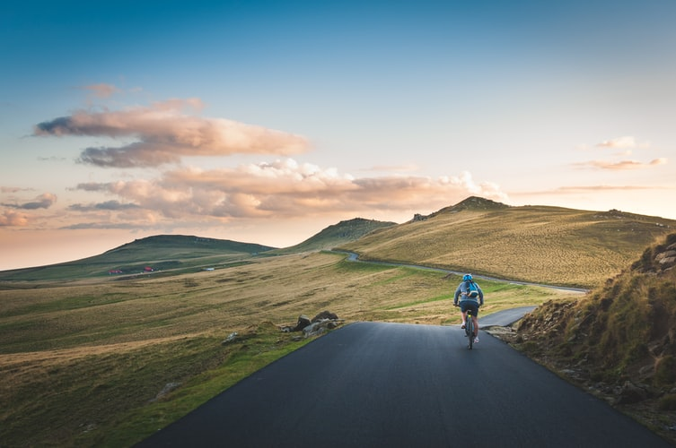
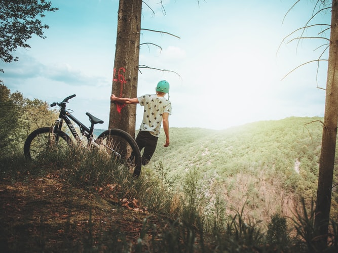
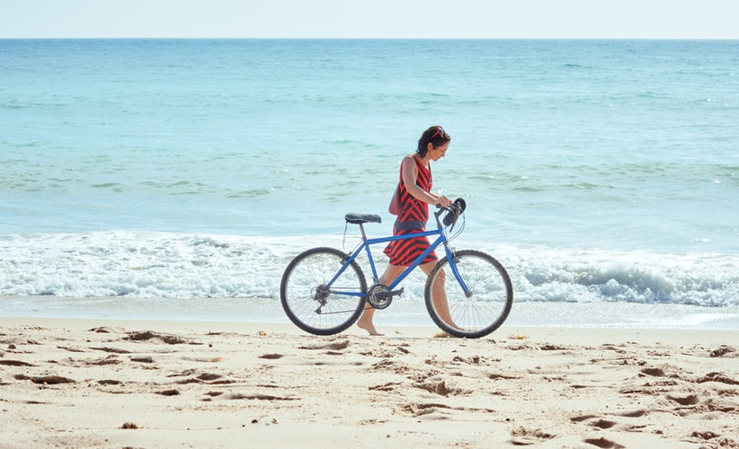
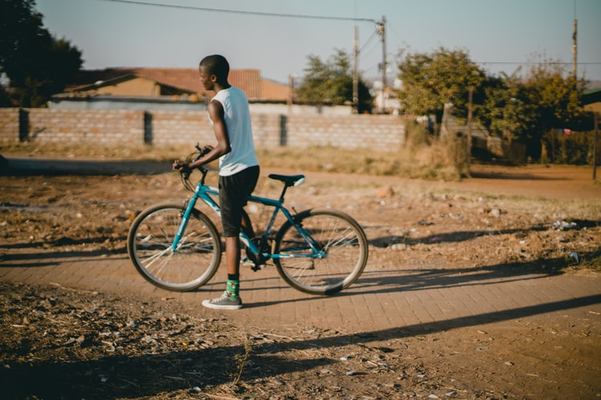
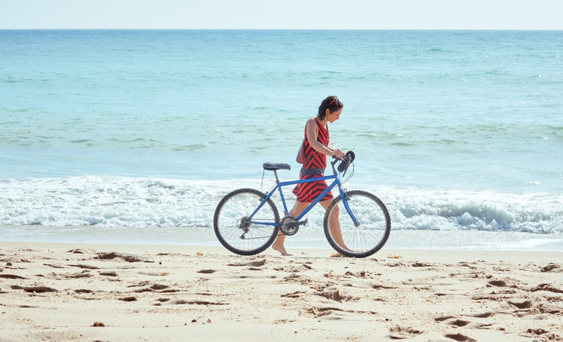
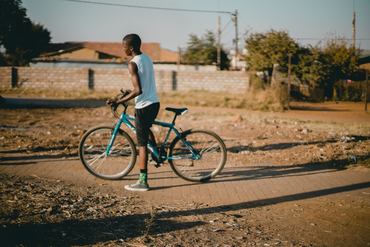
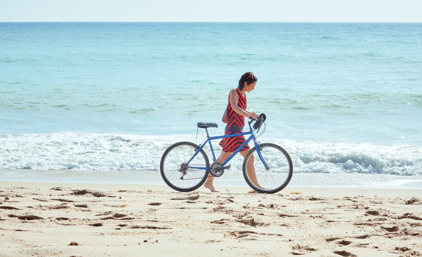
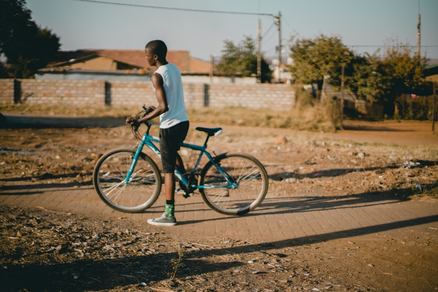

LOCATIONS


 





2019 Tour dates
Sept 19 - 29 - Deluxe Haute Route– Chamonix to Zermatt – Classic trek has a new standardSOLD OUT
Sept 26 - Oct 5 - Scenic Alps by Rail– The Grand Train Tour of SwitzerlandSOLD OUT
Sept 29 - Oct 5 - Discover Swiss Cuisine - Italian Inspired - A culinary adventure in LuganoSOLD OUT
Oct 9 - 18 - Scenic Alps by Rail – The Grand Train Tour of SwitzerlandONLY 4 SPOT AVAILABLE
Dec 3 - 11 - Christmas in Switzerland - Enjoy authentic Switzerland at its holiday bestAVAILABLE
Dec 5 - 13 - Christmas in Switzerland - Enjoy authentic Switzerland at its holiday bestAVAILABLE